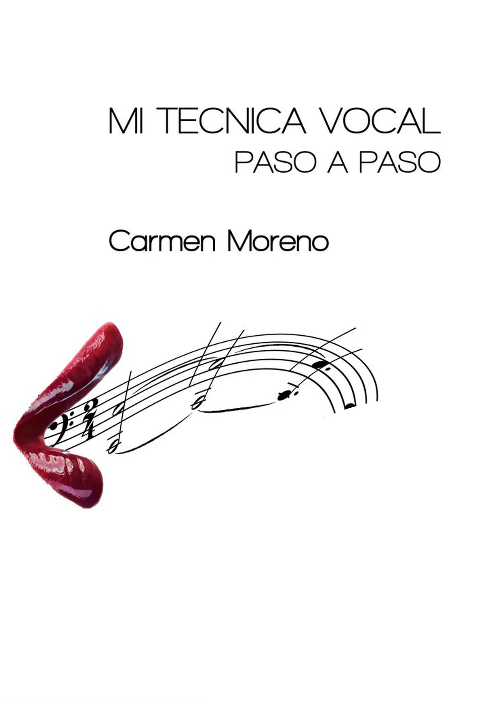
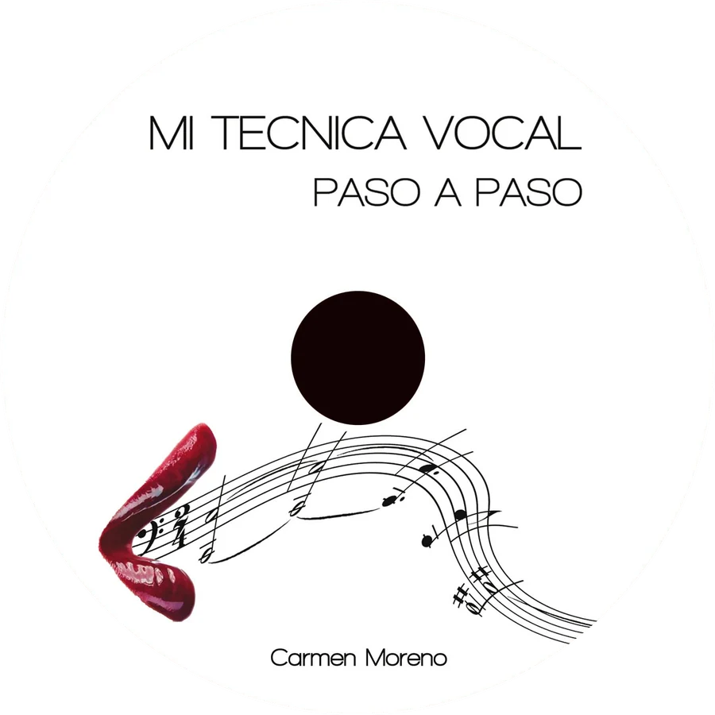
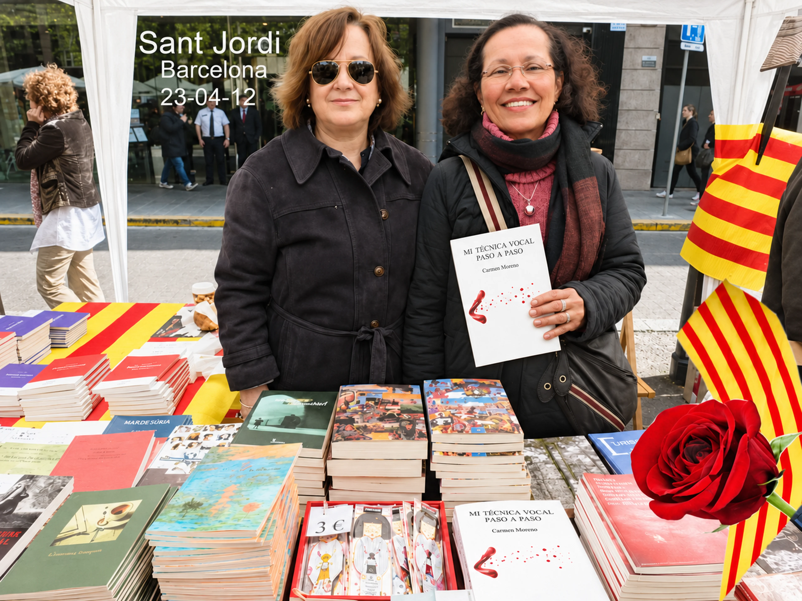
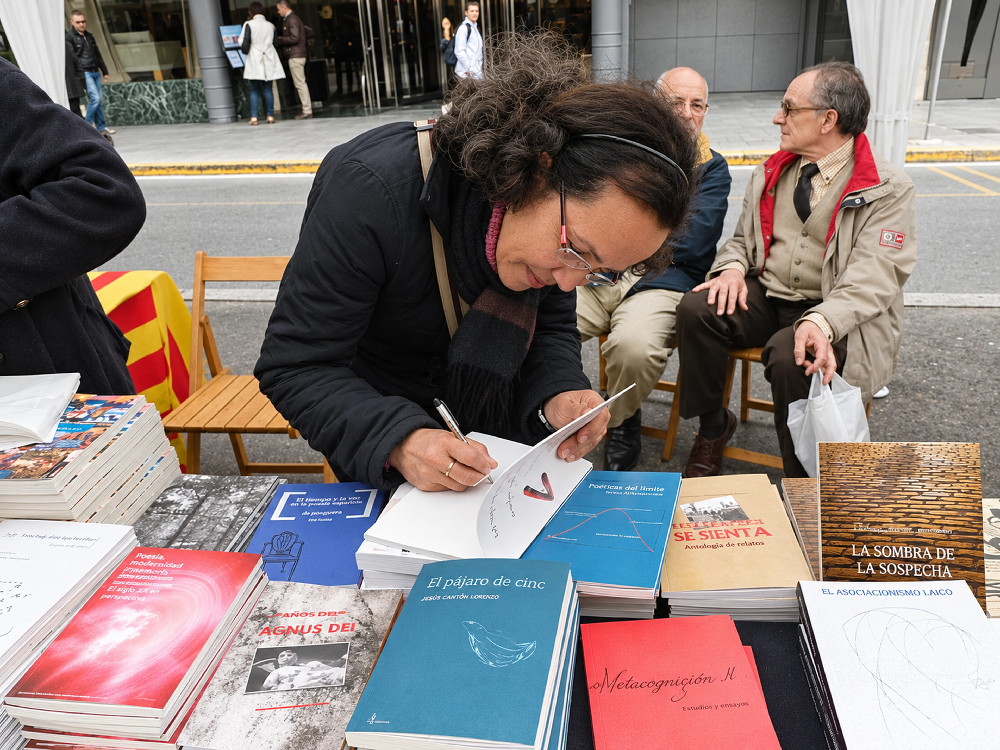

El llibre · amb DVD en 3D · en castellà
Mi técnica vocal paso a paso
El que el cantant realment vol saber, explicat pas a pas i sense allunyar-se del tema. Una referència per a estudiants, docents de cant, directors corals i professionals amb esperit investigador.
«Tot en benefici de la tècnica vocal, la base del bon cant.»Carmen Moreno · 2012


Sobre el llibre
Anys de recerca, a les teves mans
Com es respira? Com es deixa caure la mandíbula? On es col·loca el so? Quin paper tenen els llavis i les comissures? Són les preguntes de qualsevol cantant, i aquest llibre les respon amb la precisió d’una científica i l’experiència d’una soprano.
Cada explicació s’acompanya d’un DVD en 3D que permet observar què passa dins la cavitat abdominal i del rostre mentre es canta. El llibre tracta la vocalització i la seva aplicació a les obres, i també temes que rarament apareixen en un manual: la higiene vocal, els canvis hormonals, l’edat i les emocions del cantant.
Què hi trobaràs
Del primer alè a l’escena
Els temes que recorre el llibre, segons la presentació que en va fer la mateixa autora.
- Com respirarLa respiració abdominal i la pressió de suport al so.
- La caiguda de la mandíbulaProtrusió i desplaçament per alliberar el so.
- La col·locació del soEl vòmer com a punt d’arribada de la vocalització.
- Llavis i comissuresLa seva participació en el timbre, el color i la projecció.
- Vocalització i cantExplicacions concretes de cada exercici i de la seva aplicació a les obres.
- L’evolució del soEls canvis que manifesta la veu fins a definir la seva tessitura.
- Els idiomesCom s’adapta la tècnica vocal a cada llengua.
- Dificultats i solucionsMoviments, actituds i obstacles freqüents: les seves causes i com resoldre’ls.
- Higiene bucal i vocalCures, canvis hormonals, medicació, profilaxi i edat.
- Les emocionsLa seva influència en la vida del cantant, els bloquejos i una manera senzilla de desbloquejar-se.
Una història amb rosa
Va néixer un dia de Sant Jordi
El 23 d’abril de 2012, dia del llibre i de la rosa a Catalunya, la Carmen va presentar Mi técnica vocal paso a paso a la Rambla de Catalunya amb la seva editora i hi va signar els primers exemplars.
La primera edició va sortir amb Parnass Ediciones. Després el llibre va passar a BALAM, que el va distribuir a Costa Rica, Mèxic i Espanya. Des de 2016 la Carmen l’ofereix directament a través del seu web, l’única via de venda que autoritza.


Per a qui és
Un llibre per a cada etapa
Estudiants
Una guia clara per entendre el que treballen a classe.
Docents
Una referència didàctica per a educadors del cant.
Directors corals
Eines per vocalitzar la coral amb criteri tècnic.
Professionals
Per als qui canten amb esperit de recerca.
Demana un exemplar
Demana-l’hi a l’autora
Escriu a la Carmen i et confirmarà la disponibilitat, el preu i l’enviament al teu país.
Si ja tens el llibre i necessites ajuda amb el DVD, indica-ho al missatge.

La teva primera classe
La teva veu ja sap cantar. Ensenyem-li com.
Explica a la Carmen què vols cantar i què et costa. Et proposarà un punt de partida i un horari que encaixi amb tu, en línia o a Barcelona.